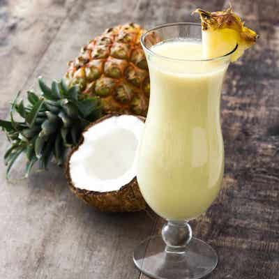

Pina Colada

What is it?
The pina colada is a cocktail made with rum, cream of coconut or coconut milk, and pineapple juice, usually served either blended or shaken with ice. It may be garnished with either a pineapple wedge, maraschino cherry, or both. The drink originated in Puerto Rico.
Ingredients
- 6oz Pineapple Juice
- 3oz Coconut Cream
- 1oz Light Rum
- 1oz Dark Rum
- 1-2cups Crushed Ice
Directions
- Add all ingredients to blender and blend till smooth
- To not look like an alcholic pour blended beverage into tall glass
- Garnish (Optional) with pineapple slices, Enjoy